THE OXIDANT ON
MARS - CHEMISTRY OR BIOLOGY?
Gilbert V. Levin
INTERNATIONAL
TESLA SOCIETY
MARS FORUM
Colorado Springs,
CO
November 13, 1993
I. The Viking 1976 Mission to Mars
A. Major impetus: search for life.
B. Three life detection instruments on each of two landers. Selected to test different theories of Mars life. Thus, only one, if any, instrument might get positive result.
C. Another instrument was to look for organic matter.
D. Pre-mission probabilities:
High for organics.
Low for life.
E. Mission results:
No evidence for organics.
Strong evidence for life by one experiment.
Most scientists chose the conservative result: no organic matter, no life - and a sharply curtailed interest in Mars.
F. The Russian ‘94 Mars Lander, the only spacecraft now targeted for Mars, will carry a U.S. experiment to investigate the remarkable activity Viking discovered on the surface of Mars. That Mars Oxidant (MOx) experiment is designed to look for an oxidizing chemical presumably responsible for the lack of organics. However, a growing number of considerations are consistent with the possibility that the Viking Labeled Release (LR) experiment may have detected living microorganisms.
II. Organic Matter and Mars
Probable sources of organic matter on Mars:
A. Synthesis from atmospheric constituents by electromagnetic, electrical or mechanical energy.
1. Miller-Urey, based on reducing atmosphere; reducing atmosphere requirement eliminated.
2. Hubbard, Hardy, Horowitz. Mars atmosphere converted 5% of CO (0.02%) to organics in 140 hr. on sterile soil.
They added a filter to remove uv light below 300 nonometers to protect their Viking Pyrolytic Release (PR) experiment.
B. Infall from comets and meteorites. On Earth approximately 10 kg/yr, but less important on Mars since thin atmosphere doesn’t brake fall. Still Biemann, J. Mol. Evol., 14, 68, 1979, thought this amount would be detectable in Viking GCMS.
C. Interplanetary dust particles (IDPs).
Earth is currently accreting approximately 3.2 x 106 kg yr-2 of IDPs containing approximately 3.2 x l09 kg yr-2 of intact organics (Anders, E. Nature, 342, 255-257 (1989) and has probably been doing so for a long geological time.
Same source provides Mars some 106 kg of carbon/yr as organics. This would provide approximately 10-9 g/cm/yr to Mars surface which would yield 10-3 ppm to the top cm of the surface material. Even if 99% of these organic deposits were destroyed each year and the remainder were mixed into the top meter of surface material, in a few hundred years readily detectible amounts would accrue.
D. Probable Direct Evidence for Organics on Mars
Various meteorites (“SNCs”) almost certainly originate from Mars. They contain organic compounds.
IV. Results of Viking
A. GCMS
Two tests (pyrolysis at up to 600 deg. C, GC separation of vapors and gases, followed by MS identification) at each of two sites reported negative for indigenous organic matter.
B. The LR Life Detection Experiment
Radiorespirometry
LR - Medium
Rationale:
a. Theoretical basis - all substrates selected were Miller-Urey products thought to have evolved life on Earth and to have been available for similar evolution on Mars.
b. Empirical basis - Substrates were selected because they elicited responses from all types of organisms tested.
c. No added co-factors or buffers - anything else needed by Mars life should be available in the Mars soil.
The LR Viking Instrument
Describe Instrument
Earth Testing - aerobes, anaerobes, chemotrophs, heterotrophs, bacteria, algae, fungi: thousands of tests including pure cultures and soils from many places over the world, field tests in extreme environments. All tests were successful, with no false positives as demonstrated by poisoned or heat-sterilized controls. As few as 10 cells were detected. The LR method is now widely used to detect blood infections and toxicity, and as a research tool.
A flight type LR instrument into which a California soil was placed was maintained under Martian conditions for nearly three days and tested the same as if on Mars.
SN 103
Results from Mars:
VL1 Cycle 1
VL1 All Cycles
VL2 All Cycles
LR Data unequivocal were it obtained on Earth.
GCMS Data was equivocal for Earth soils.
BUT--GCMS prevailed in mind of the majority.
C. A theory was proposed in which hydrogen peroxide was formed photochemicaly in the atmosphere and deposited on the surface of Mars. Present in the LR sample, it reacted with the formate in the LR nutrient to produce the signal detected.
The peroxide theory solved another major problem about Mars raised by Viking. The Mars atmosphere is in dynamic disequilibrium. Since CO2 O + CO, the entire Mars atmosphere would convert to CO. But Viking confirmed that the atmosphere contained little CO and was about 95% CO2. The disequilibrium of a planetary atmosphere had been proposed as a preferred method for seeking life on other planets. Thus, the findings on the Mars atmosphere constituted a fourth, phantom life detection experiment for Viking. The hydrogen peroxide theory was initially conceived as a means for explaining why the CO2 had not completely disappeared from the Mars atmosphere. It proposed that the carbonates formed in the soil through extraction of CO2 from the atmosphere was re-evolved by the peroxide.
START 11/9/93
A key post-Viking revelation may reconcile the apparently opposing results of the LR and GCMS experiments.
To drive home the full implication of their negative Mars result, the GCMS experimenters published test data obtained prior to launch. Antarctica had been selected as the most Mars-like area on Earth and, accordingly, samples from the Antarctic desert were used to calibrate the test standards GCMS which “corresponds almost exactly to the flight instrument with the exception of the associated test equipment and the capability of reusing a single sample oven which is filled manually.” A NASA-supplied, bonded soil, Antarctic No. 638, was placed in the GCMS. Large numbers of organic compounds were identified, demonstrating sensitivities for the GCMS ranging from 43 ppb to 150 ppb. In 1979, Biemann reported that organics were undetectable in an Antarctic soil tested by the GCMS prior to launch, but did not say that organics were present in that sample, a significant omission.
In a 1979 thesis on the development and findings of the Viking GCMS, Lavoie reported that Antarctic Soil No. 638 contained “approximately l04 bacteria per gram and less than 200 algae per gram.” “Simple calculations show that most of the organic matter detected cannot have come directly from microorganisms but must have been present as organic debris associated with them.” “Pyrolysis is roughly 10% efficient.” “Now for one gram of this Antarctic soil containing 104 organisms, the amount of the major pyrolysis product is expected to be only 10-4g (104 x l0-15) or 10 ppt which is not only far below the levels of components actually found, but is also well below the instrument’s limit of detection.” Biemann calculated that 108 organisms or carcasses/g were needed.
The Smoking Gun:
The Lavoie thesis presented another test of the GCMS. Antarctic Soil No. 726 produced no detectable organics as reported in the 1979 paper by Biemann. Yet, a quantitative wet-combustion method for determining organic carbon in soil, which was performed at the time of the GCMS test, found 0.03% or 300 ppm organic carbon to be present. Reading the thesis years after Viking, I immediately checked our records to see if we had tested Antarctic soil No. 726 in the LR flight type instrument. We had. Here are the results--not only were organics present, so were living organisms. So, even on Earth, the LR instrument detected life in soil in which the GCMS instrument could detect no organics.
Thus, before it ever went to Mars, the GCMS was an impugned instrument. Had that fact been published and recognized, the negative GCMS results on Mars would not have weighed as heavily against the positive LR results.
However, having been generally accepted, the peroxide theory today retains its preferred status despite the identification of a hole in the GCMS big enough to drive the LR results through. Therefore, there is no longer any required conflict between the two sets of results.
Moreover, some important facts pose obstacles to the peroxide theory:
1. GEx nutrient, “chicken soup” contained many more organic compounds than LR nutrient. GEx was non-repeatable and O2 evolved even after 160º heating.
AND, while LR nutrient placed on Mars “soil” evolved CO2, GEx nutrient, much richer in organics than LR nutrient, resulted in absorption of CO2 when injected on dry “soil.”
Clearly, the LR and GEx responses were different.
2. The peroxide theory has to surmount contraindicating reaction rate constants. In Mars atmosphere:
2HO2 UV H2O2 + O2 k = 9.5 x 10-12
Near Mars surface:
H2O2 + UV 20H J = 5.2 x l0-5
Thus, the destruction of peroxide on Mars is preferred over its formation by a factor of at least 107.
Even if the H202 precipitates as ice, the UV would still destroy it.
3. Mariner 9
Rudy Hanel, many other GSFC scientists and myself were Experimenters on the Infrared Interferometer Spectrometer (IRIS) flown on the Mariner 9 which observed Mars from orbit in 1971. Several years after Viking, in an attempt to resolve the H2O2 theory, I called Bill Maquire of the IRIS team here at GSFC to see if our instrument might have been able to detect peroxide. He said it had an excellent window for H2O2 to detect it in the entire Mars atmosphere column and on the surface.
None was detected.
Upper limit for H2O2 by IRIS: approx. 10-4 cm atm = approx. 10-2 pr u
Viking measured atmospheric water vapor of approx. 15 pr u near Viking 1 =
103 x [H2O2]
H2O2 infinitely soluble in H2O. If H2O2 formed survived UV, it would be increasingly diluted by Mars water vapor which approached saturation diurnally at the Viking lander sites. Abundance of water vapor is > 100 x that of upper limit of measurements on H2O2 on Mars and is available for dilution. However, dilution does not protect H2O2 from destruction by UV.
4. Mike Mumma, Gordy Djoraker and Don Jennings - in IR observations from Hawaii saw no H2O2 with instrument that reduces upper limit by factor of at least 2 over Mariner 9. More data to come in 1992. Thus, the no. density at surface of Mars < 2 x 1010 molecules H2O2/cm2.
5. H2O2 is destroyed after 3 hr. contact with Mars analog soil under Mars conditions with only 600 ppm organics present in the soil. Same for other candidate soils tested. Destruction of H2O2 is stimulated by alkaline pH which is probably the case on Mars because of heating exp.
6. Sigg & Neftel (Nature, 351, 558, June 13, 1991) report 150 ng/g H2O2 retained in Antarctic glacial ice:
Using a density of 2 for soil, 1 cm3 would contain 8 uM H2O2. Assuming the “surface” to be 1 mm deep, yields:
0.8 uM H2O2 on Earth vs 3x10-6 uM on Mars the upper limit established by direct observation of Mars (2x1010/cm2). This amount far exceeds the upper limit established for Mars by Mariner 9 or Hawaiian observations:
0.8 M H2O2/cm2 on Earth vs 3 x 10-6 u M H2O2/cm2 on Mars
Yet life developed and exists on Earth!
All terrestrial organisms except some anaerobes have catalase and superoxide dismutase to deal with peroxide.
John Edwards of Brown U., a leading peroxide expert, consulted with us on the Mars peroxide issue. He pointed out that hydrogen peroxide is highly reactive on surfaces where it self-destructs, especially in the presence of light. After a thorough review of all peroxides, he said he would be very surprised if peroxides could survive on the Mars surface.
8. Could not be reaction with formate only:
Heating of test cell after reaction drove 14CO2 from soil sample in excess of that available from formate: 20,000 cpm vs 15,000 cpm at, least 2 substrates were involved in LR reaction.
Individual substrates tested, demonstrates H2O2 sensitivity of all; formate is 2nd least sensitive.
9. LR Experiments to separate Biology from Chemistry:
a. 50° C heating experiments
After conferring with Viking Biology and GCMS Team members, 50 deg. C was selected as a temperature to heat a sample before testing in order best to distinguish chemistry from biology. That temperature was thought unlikely to destroy a chemical agent, but likely to impair or destroy microorganisms. The results indicated microorganisms as the active agent in the soil.
b. Long term storage
LR active samples were stored in the sample hopper for 2-3 months at approximately 10 deg C, a temperature in the upper ambient range on Mars. When then tested, the samples produced virtually no response. Where had the peroxide gone? Evaporation? In normal active runs, the soil sample is kept at 10 deg C for several days prior to injection of nutrient. This precludes evaporation of peroxide as the answer to the long-term storage problem because the peroxide would also have evaporated in the several, up to five, days. Could microorganisms cut off from their environment have died?
10. Search for Nonbiological Explanations
Bio lab work
Others
V. The Case Rests
Evidence - There has been much talk of “evidence.” NASA and other scientists have said and published that Viking produced “no evidence for life.” The strong, consistent and compelling responses from the LR experiment were viewed only as evidence for peroxide or a peroxide derivative! This circular logic is based on a theory of peroxide formation published long before Viking which theory was never considered seriously enough by NASA or the experiment selection panels to influence the choice or development of the life detection experiments. At best, it remains a tenuous theory. Opposing it are real facts:
No peroxide has been detected by very sensitive observations of Mars. The upper limits established by these observations are far below the amounts needed to produce the LR response.
Peroxide is destroyed by UV far in excess of its rate of formation.
None of the many experiments attempting to duplicate Mars LR results was adequate to the task.
Also, strong experimental and theoretical evidence or organics on Mars. In view of demonstrated limitations of sensitivity of GCMS, are they correct in relying on it to negate the LR data?
Reliance was placed on a theory that is speculative at best and impossible by Mars data at worst.
VI. The Verdict
Life on Mars was condemned to death.
A. Current NASA programs, such as in MESUR, do not contemplate life detection instruments. Nor do they contemplate LR type instruments to study the strangest thing detected by Viking - the strong reactivity of some agent in the surface material of Mars. The LR technique is forgotten despite its provocative results. However, they contemplate that life might have existed on Mars in the past and, therefore, NASA is supporting development of experiments to search for fossils of microorganisms. This is real chutzpah--to think they know enough about biology, evolution and Mars to conclude that life might have evolved on early Mars, but could not have adapted to planetary changes far less severe than those our form of life survived on Earth!
B. The CIS (Commonwealth of Independent States) thinks otherwise. I have been invited to participate as Co-experimenter with Russian Academicians Managadze and Muhkin on an LR life detection experiment on their 1996 Mars Lander. For nearly a year, I have vainly sought U.S. support or even mere approval to participate.
VII. The Appeal
A long recognized scientific axiom is to repeat and expand on a method of inquiry once it has demonstrated its usefulness. Whether chemical or biological, the LR response is scientifically exciting. The evidence leans more toward biology than chemistry. Answering the question of life on Mars should once again become NASA’s highest priority. NASA planning for Mars return sample missions and manned landings on Mars should be reexamined to be certain of adequate safeguards for health and against interplanetary contamination.
With the dawn of a new world order, what better expression of the new human spirit accompanying it could be demonstrated than the reconciled former adversaries going to Mars together in pursuit of an answer to one of mankinds most tantalizing question: “Are we alone in the universe?”
NASA and the U.S. should welcome and cooperate in this opportunity.
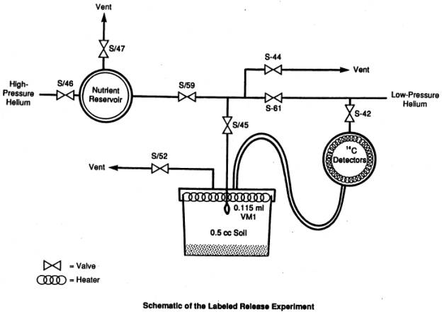
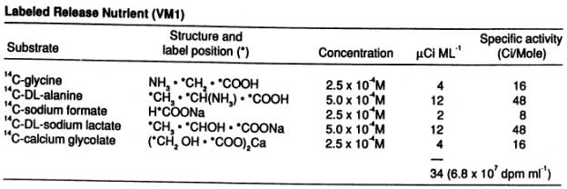
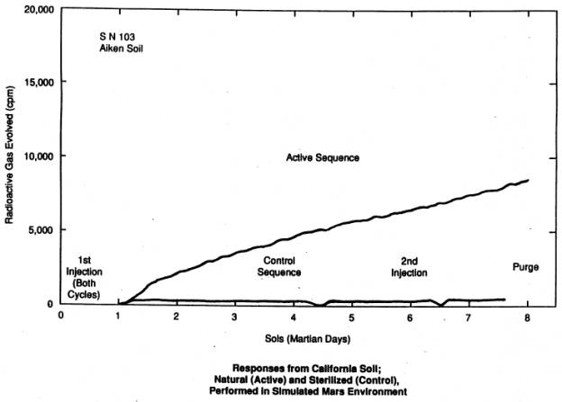
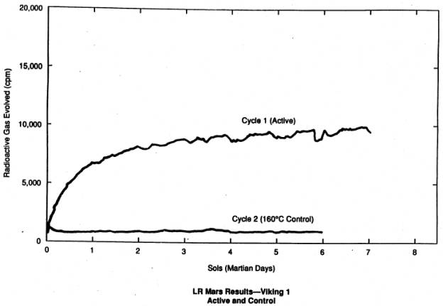
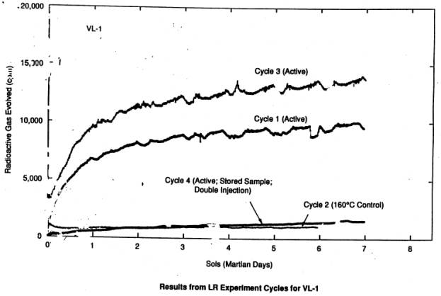
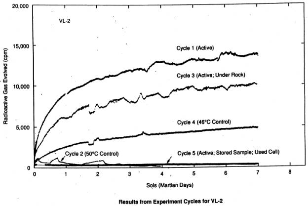
|
EVIDENCE FOR ORGANIC COMPOUNDS ON MARS Synthesis: Miller-Urey experiments produced organic compounds in postulated reducing atmosphere of primitive Earth. Early Mars may have had similar atmosphere. Hubbard, Hardy, and Horowitz reported formic acid and other organic compounds synthesized by sun lamp acting on simulated Mars atmosphere with products accreting despite U.V. Comets and Early barrage and lesser current impacts delivered significant quantities of Meteorites: organic compounds to Earth¾same effect on Mars. SNC Meteorites: Generally accepted as being from Mars and ejected to Earth by meteor impact, contain organic compounds. Interplanetary Some 10 kg/yr land on Earth containing complex aromatic compounds Dust Particles: with mass spectra as high as 670 amu. Approximately the same order of magnitude expected on Mars. |
|
THE VIKING GCMS MARS DATA The only Mars compounds detected: CO2 and H2O VL-1 values for H2O “are much less precise” than for VL-2; VL-1 did not analyze for CO2. Hence only VL-2 results are useful for CO2 and H2O. VL-2 RESULTS Sols Held Sample Temp. ºC H2O (% wt) CO2 (ppm) Before Test Bonneville 200 0.05 <50 3 350 0.30 50-500 5 500 1.00 50-500 14 Under Badger Rock 50 <0.01 <50 4 200 0.20 50-500 6 350 0.30 40-400 8 500 0.80 70-700 10 Assumed sample size = 60
mm3 From: Biemann et al., J.G.R., 82,
4641-4658 (1977). |
|
SENSITIVITIES OF GCMS AND LR GCMS LR Organic matter equivalent to that provided by 10 bacteria 106 bacteria (Detritus from accumulated dead (No growth required) cells might be sufficient even if few living cells) Failed to detect 0.03 percent organic carbon and Detected living 0.003 percent organic nitrogen in Antarctic organisms in Antarctic Soil No. 726 Soil No. 726 |
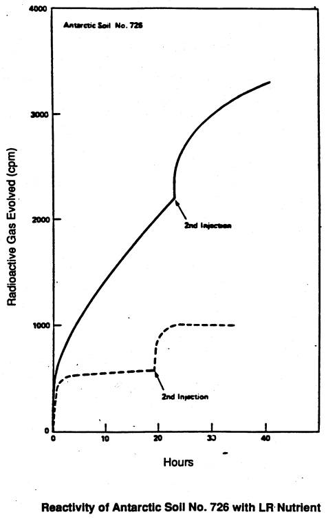
|
CAVEATS CITED* FOR VIKING GCMS RESULTS · “There is no sensor measuring the final level or completeness of the filling operation. Thus one has to assume that the oven is filled to capacity, i.e., approximately 60 mm3 of surface material is being analyzed.” · “All values for abundances may deviate from actual values by a factor of two or even more.” · “. . . those subsystems (of VL-2) involved in the soil analysis, namely, the sample ovens and tubing and valving prior to and possibly after the gas chromatographic column were less clean (than those of VL-1). For this reason the interpretation of the soil analysis data requires the substraction in a qualitative and quantitative sense of the background data acquired during a complete blank run performed during cruise. This blank was obtained on oven 2 and therefore holds strictly for that oven, and the use of these background data with the (Mars) data obtained from oven 3 is based on the assumption that the contamination level of the two ovens would be similar.” · “Several factors severely complicate the determination of the amount of water evolved upon heating Martian soils.” The H2O determinations, therefore, were made by “simulations on the earth-based laboratory instrument . . . which was complicated by the fact that one of the flow restrictors in the Lander 2 gas chromatograph-mass spectrometer effluent divider was found to have been blocked almost completely . . . The results lead us to the conclusion that the amount of water evolved on sol 43 is equivalent to approximately 0.2 mg (which in the very worst case could be off by a factor of 5) (emphasis added). · “The CO2 values listed in Table 4 are still very uncertain.” *Biemann et al., J.G.R., 82, 28, 4641-4658 (1977). |
|
ASSURANCE OF SURFACE SAMPLE IN VIKING GCMS The only molecules detected from sample were H2O and CO2. H2O = <0.01-1.0% = 0.01-1 mg CO2 = <50-700 ppm |
|
CONSTRAINTS ON PEROXIDES ON MARS Theories for peroxides, derivatives and complexes start with photochemical production of H2O2 in atmosphere. Process Rate Coefficient 2HO2 H2O2 + O2 9.5 x 10-12 H2O2 2OH 5.2 x 10-5 \Rate of destruction of H2O2 @ 107 x rate of production. Upper limits established for H2O2 on Mars (No spectral feature detected) Mariner 9 IRIS I.R. < 10-2 precipitable µ Earth based I.R. £ 10-3 percipitable µ H2O2 less likely to survive U.V. than are organics. (Life on Earth evolved and persists with greater [H2O2] than exists on Mars.) |
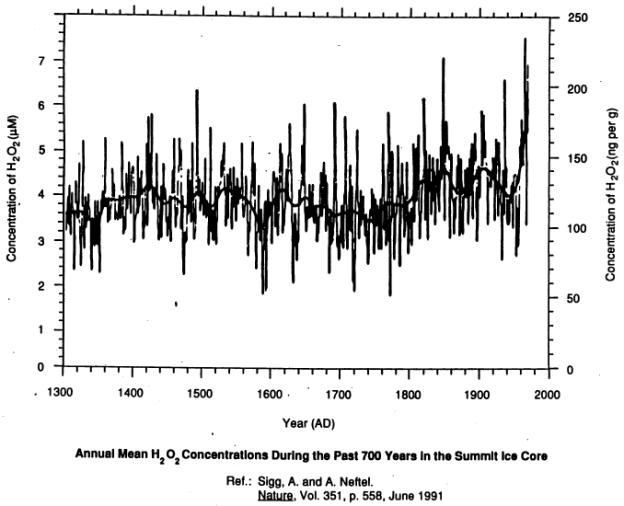
|
WATER AND LIFE Lack of liquid water cited as precluding life on Mars. On Earth: · Diatoms frozen in ice in Arctic and Antarctic are responsible for much of the primary productivity there. · Microorganisms grow inside porous rock on water occasionally trapped and retained under severely adverse conditions. · Cryptobionts exist for hundreds or thousands of years frozen or without water, and revive on being placed in favorable environment. · Life depends on evolved ability of plants to glean carbon from 0.03% of CO2 in air. · Molecular levels of water may be organized in biological membranes in manner that permits metabolism even if microorganisms are surrounded by ice. Might Mars organisms have similarly evolved with their environment? |
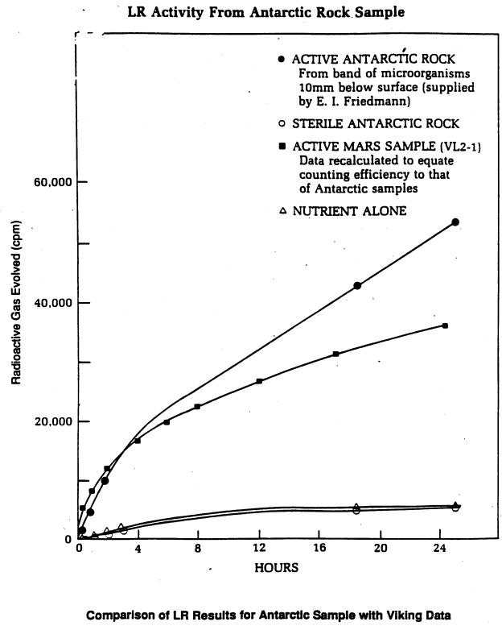
|
NONBIOLOGICAL HYPOTHESES FOR MARS LR RESULTS · H2O2 on Mars reacts with LR medium. · Mars minerals catalyze degradation of LR medium. · UV activates Mars surface, which reacts with LR medium. · Ionizing radiation activates Mars minerals to catalyze degradation of LR medium. · Ionizing radiation of finely divided, desiccated, oxygen-rich Mars minerals produces disjunctions that degrade LR medium on contact. · Large surface area of finely divided, desiccated minerals generates sufficient heat on wetting to degrade LR medium. · Superoxides on Mars react with LR medium. · Polymeric suboxides on Mars react with LR medium. · Smectite clay catalyzes decomposition of LR medium. · Palagonite clay catalyzes decomposition of LR medium. · Formate in LR medium in contact with Mars catalyst decomposes thermodynamically to yield CO. · Lactate in LR medium in presence of Fe+++ decarbonates to produce CO. · Peroxonitrate ion generated by photolysis of inorganic nitrates participates in oxidation of LR medium. |
|
MARS ’94 MOx OBJECTIVES · Measure the rate of degradation of organics in the Martian environment to a level of less than 0.1 µg cm-2 over 30 days. · Determine if the reactions seen by the Viking biology experiments were caused by a soil oxidant and measure the oxidative reactivity of the soil at levels corresponding to less than 1 ppm of H2O2 and/or metal superoxides. · Expose materials of interest to human exploration and monitor degradation of these materials at a level of 0.1 µg cm-2 over 30 days. · Develop technologies and approaches that can be part of future soil analysis instrumentation. |
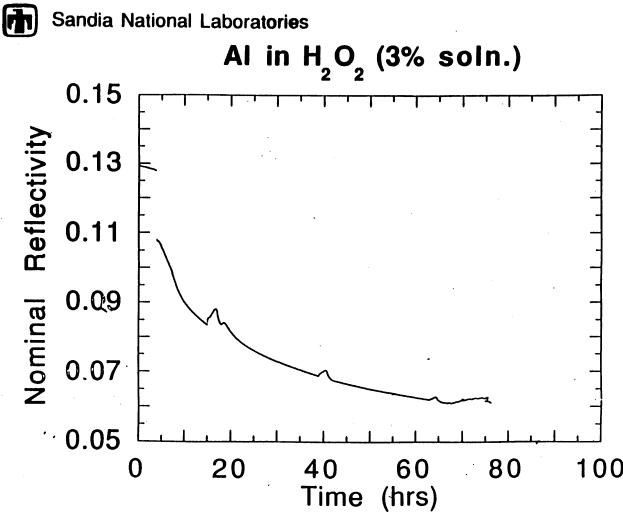
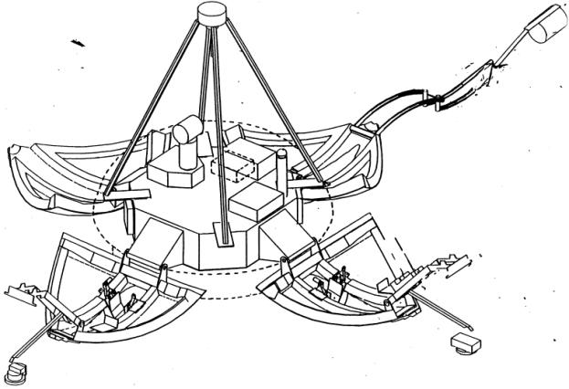
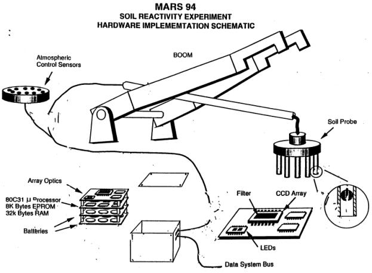
|
THE EXTENDED LR EXPERIMENT 1. Repeat LR experiment to confirm Viking results and extend information on planetary distribution of active agent(s). 2. Apply each organic substrate separately, including those having L and L isomers, to determine any preference. 3. Perform series of heat-treated samples¾tests and controls¾to determine time-temperature character of active agent(s). 4. Determine pH of wetted samples. 5. Determine heat of reaction on wetting of samples. 6. Add a variety of gases to test chamber to monitor effects on reaction. |